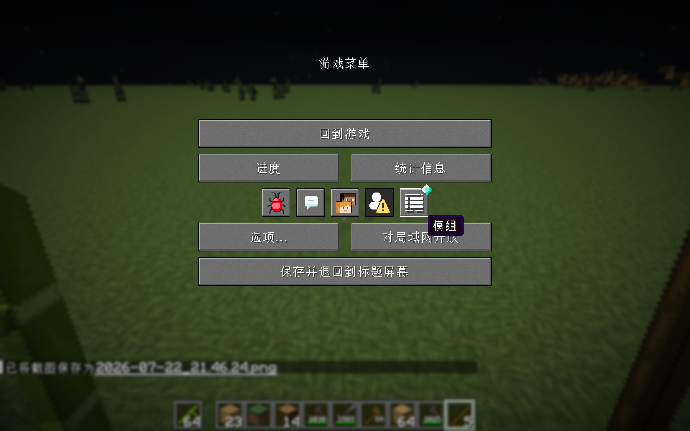

列表里有它吗
版本和前置对不对
设置入口又藏哪了
装上不等于生效，先找证据，再找设置。
已安装模组集中列出：搜得到、看得到版本，才知道它真的被客户端认到了。
有图形配置就直接点；按钮灰了，再去看按键、命令或 config 文件。
确认该模组是否提供了可打开的配置页。
真正修改选项、按键和功能开关。
列表里没有它，先查版本和前置；有它但没按钮，就去看模组说明。

主菜单和暂停菜单都能进入 Mod Menu，不用退出游戏再翻文件夹。
Mod Menu 支持拖放 JAR，但它只是手动备选，不推荐作为首选。
先确认模组已经生效，再打开它自己的设置。
从主菜单或暂停菜单打开 Mod Menu。
看见它，确认客户端已经认到它。
有配置按钮就直接点，没有就看模组说明。
“装没装上？设置在哪？”—— 先去 Mod Menu 里找。
 实际游戏界面 · Minecraft 26.2
实际游戏界面 · Minecraft 26.2